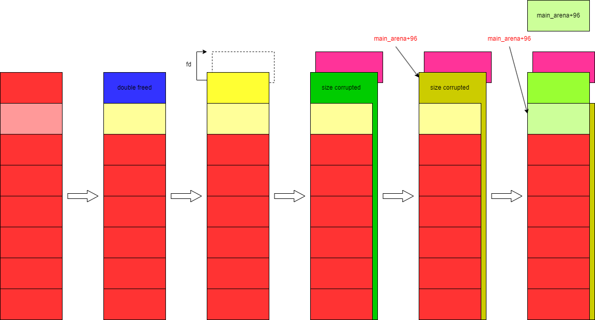

buu083-x_ctf_b0verfl0w
这道题一共可写50字节，其中可以覆盖返回地址，又有sub esp, 24h和jmp esp这样的gadget，可以直接在栈上写shellcode，但是对于50字节的利用比较紧凑，需要对shellcraft的汇编代码稍作修改。
其中将开头3个push改为2个，同时省去避免输入空字符所做的绕过，可以节省几个字节空间。
1 | from pwn import * |
buu084-picoctf_2018_leak_me
这道题利用strcat函数即可泄露口令。虽然每一次生成靶机的时候口令都不一样，但方便的做法就是先泄露一次然后再跑一次直接输口令。
1 | from pwn import * |
buu085-inndy_echo
格式化字符串漏洞。
1 | from pwn import * |
buu086-hitcontraining_unlink
同第73题。
buu087-ciscn_2019_final_3
从表面上来看，这是一道C++ pwn，但实际上就是一个普通的堆题。
只提供了2个选项：添加chunk和删除chunk，其中删除可以有double free，分配chunk只能分配0x78以内大小的chunk。每一次分配结束之后会返回堆地址。虽然本题我们获得了堆地址，但是程序和libc的加载地址都未知，而且看上去无法读取内存内容。
因此我们就必须考虑另辟蹊径。
思考一下，如果我们能够将chunk分配到main_arena中或者是__free_hook，那么分配之后的输出就能够让我们成功获取libc的地址。因此总的思路是：想尽办法将chunk分配到main_arena，获取libc地址后再想办法分配chunk到__free_hook。本题的libc版本为2.27-3ubuntu1，笔者的libc版本为2.27-3ubuntu1.6，这两个版本对于tcache的free操作不同，前者没有对于tcache的double free检查，而后者有，因此必须加上环境变量LD_PRELOAD选项。但即便如此，也只能勉强做题，因为没有dbg-symbols，我们无法在gdb中使用heap、bin等查看堆内容的关键性命令，这会使得做题变得很难受。不过由于这道题的出题时间比较早，出现这种情况也是完全可以理解的，做最近比赛的题目一般就不会有这种蛋疼的情况。
说回到本题上。本题利用仅有的一个输出机会的方式如下图所示：

注：图中浅色chunk比深色chunk的大小小。
由于2.27-3ubuntu1版本中没有对tcache chunk的double free检测，我们甚至可以连续两次释放同一个chunk。释放后，首先分配一次出去，将fd指针修改到该chunk前面0x10字节，然后再一次分配，这一次分配就可以修改到这个chunk的大小，将其改成unsorted bin的范围，这样在free这个chunk之后，堆中就会出现2个相同的指向main_arena+96的地址。然后我们通过继续分配让这个chunk被切割，这里要注意一个细节，就是切割后main_arena+96的保存地址会修改，我们让这个地址被修改到下一个chunk的fd部分，再提前将这个chunk释放掉，这样tcache中就会链入main_arena+96的地址。如此操作之后，我们就能够向main_arena+96分配chunk。
这里还要注意一个细节，我们要将第2个chunk的大小设置得与其他的chunk不同，可以假设一下，如果实现分配的所有chunk大小都相同，那么释放的顺序应该是2、1、1，这样第1个chunk才能在后面的malloc中优先被分配。在malloc两次之后，第1个chunk的大小被成功修改，此时tcache中还有1个chunk，那就是chunk 2，此时若想要切割unsorted bin chunk，就必须首先分配第2个chunk，此时tcache为空，即使此时chunk 2中的fd被修改为了main_arena+96，我们也无法在这个地方分配chunk了，因为它已经无法被链入到tcache链表，只有当chunk 2在释放状态时修改fd指针才行。
有了libc的基地址之后，我们就可以如法炮制，通过double free将chunk轻松地分配到__free_hook，然后一次释放即可get shell。
1 | from pwn import * |
buu088-axb_2019_fmt64
和第85题神相似。
1 | from pwn import * |
buu089-wustctf2020_name_your_cat
直接溢出。
1 | from pwn import * |
buu090-pwnme1
scanf直接溢出。
1 | from pwn import * |
buu091-axb_2019_brop64
直接溢出。(怎么都90多题了还是这种简单题……)
1 | from pwn import * |
buu092-[极客大挑战 2019]Not Bad
这题考察shellcode，由于给定的写长度不够，可以采用边写边执行的方式，增加可写代码的长度。
1 | from pwn import * |